Las dos filosofías
El laboratorio tiene dos máquinas grandes para el mar de ondas de ζ, y son opuestas y complementarias. El TREN no rema el mar — lo GIRA: cambia cada suma gigante por otra más corta que dice exactamente lo mismo, hasta que cabe en la mano. Llega a aguas donde nadie remó jamás (10⁴⁸), pero cada presa suya tiene que pasar por un juez. El DELOREAN sí navega — con casco certificado, memoria y luz embotellada — y cuando no hace falta recorrer el camino, SALTA: decile el número del cero o del primo y te lleva a la puerta.
Y hay algo que sólo se ve cuando se las desarma juntas: las dos corren la misma ley de bloque, L = k·(C/t)1/3, con presupuestos distintos. Son dos ajustes de un mismo motor.
EL DELOREAN — ⑪ la misma ley · ⑫ el casco · ⑬ un pliegue · ⑭ la brújula · ⑮ los dos correos
🚂 EL TREN — la locomotora de Landsberg-Schaar (cmd/circulo)
① EL PUENTE — por qué una ola de ζ ES un peine
Esta es la pieza que faltaba en el recorrido viejo, y es la primera de todas: el eslabón entre el mar y el círculo. Un término del mar es (k₀+j)−1/2·e−it·ln(k₀+j). Parece una cosa rara hasta que uno abre el logaritmo alrededor del arranque del bloque: ln(k₀+j) = ln k₀ + u − u²/2 + u³/3 − … con u = j/k₀. Y ahí aparece: la fase del bloque es una constante, más una pendiente, más una curvatura, más una torcedura. Tres perillas. Eso es un chirp, y por eso todo lo que sabe la máquina sobre chirps se puede aplicar al mar de ζ.
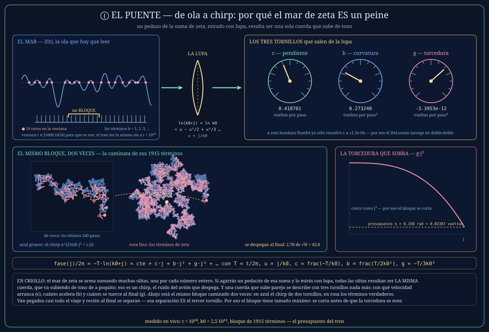
Medido en la lámina: en el agua t = 10²⁴ con k₀ = 2,5×10¹¹ las tres perillas valen c = 0,4187, b = 0,2732, g = −3,40×10⁻¹². La torcedura parece nada — pero multiplicada por el largo del bloque al cubo deja 0,15 radianes, que es exactamente el presupuesto de la parada ⑦. La lámina también confiesa algo: a esa profundidad la pendiente c no es resoluble en float64 (el ulp de T/k₀ es 1,2×10⁻⁴), y ese es el motivo por el que el casco del DeLorean es doble-doble.
② LAS DOS RUEDAS — la reciprocidad exacta de 1893
Landsberg-Schaar: una suma de q términos ES una suma de p términos girada 45 grados y estirada. No parecida: igual. Con q gigante y p chiquito, el numerito de arriba resuelve al gigante de abajo. Las fases se llevan en enteros exactos (p·n² módulo 2q, arrastrado por diferencias para que nunca desborde), así que el único error de coma flotante es el coseno final.
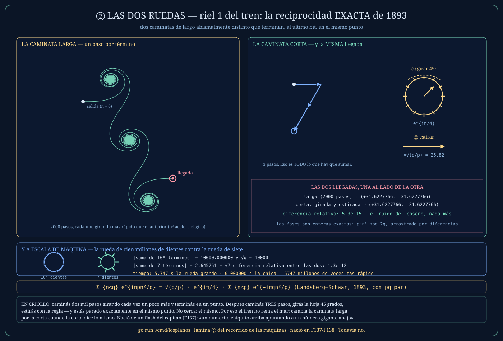
Medido: la caminata de 2 000 pasos y la de 3 pasos terminan en el mismo punto con diferencia relativa 5,3×10⁻¹⁵. Y a escala de máquina, la rueda de 10⁸ dientes contra la rueda de 7: |S| = 10 000,000000 = √q exacto, diferencia 1,3×10⁻¹², 5,8 segundos contra un tiempo inmedible.
De dónde salió: de un flash del capitán (F137), textual — «un numerito chiquito arriba apuntando a un número gigante abajo, y resolver esto con lujo». Se decodificó como inversión modular y quedó riel en un día.
③ LA VUELTA — dónde se alinean las flechas
El mar de verdad no tiene curvatura racional: sus bloques son chirps con b irracional, y ahí la identidad de 1893 no cierra sola. Entra la vuelta del círculo — Poisson más fase estacionaria. La idea en criollo: si sumás un montón de flechas que giran cada vez más rápido, casi todas se cancelan entre ellas; sólo sobreviven los pedacitos donde el giro se frena un instante. Cada uno de esos puntos quietos es un término del dual. Y como hay unos 2b por cada término original, la suma de N términos se vuelve una de ~2bN.
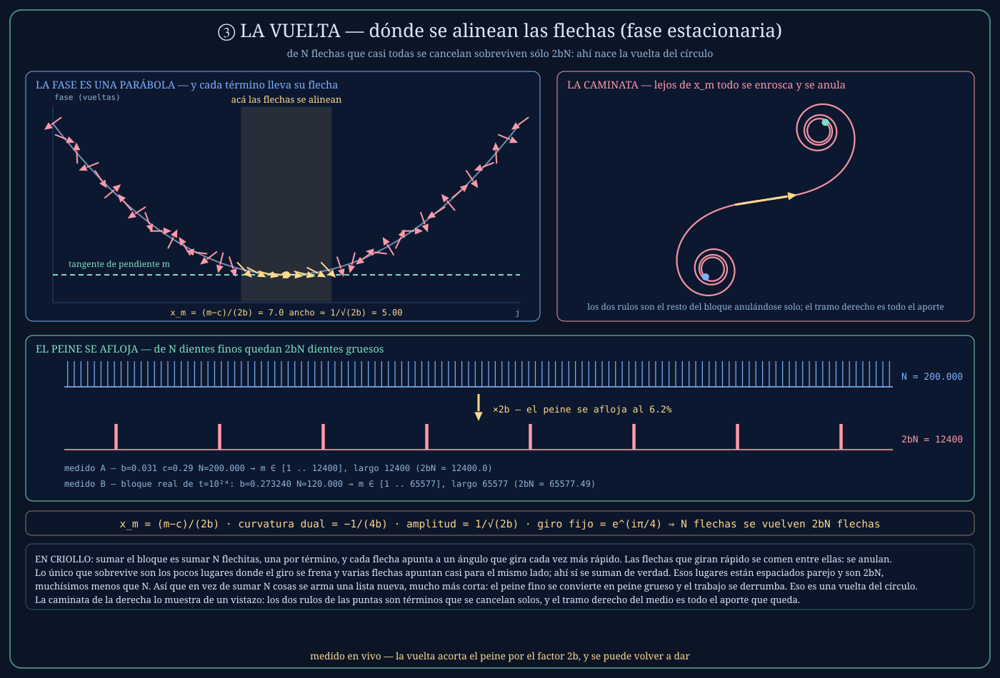
Medido: con b = 0,031 y N = 200 000 el dual tiene 12 400 términos = 2bN clavado. Y con el bloque real del mar (b = 0,2732, N = 120 000) da 65 577 contra 2bN = 65 577,49 — el piso se come el 0,49 del borde.
④ EL DESCENSO Y SU TACÓMETRO — la cascada de Euclides
Acá está el corazón del motor rápido: el dual de un chirp es otro chirp. Entonces se puede volver a girar. Y otra vez. Cada vuelta acorta por 2b y reescribe la curvatura como 1/(4b) — que es, exactamente, el paso del algoritmo de Euclides sobre fracciones continuas. Se gira hasta que la suma cabe en un tamaño cómodo y ahí se rema a mano.
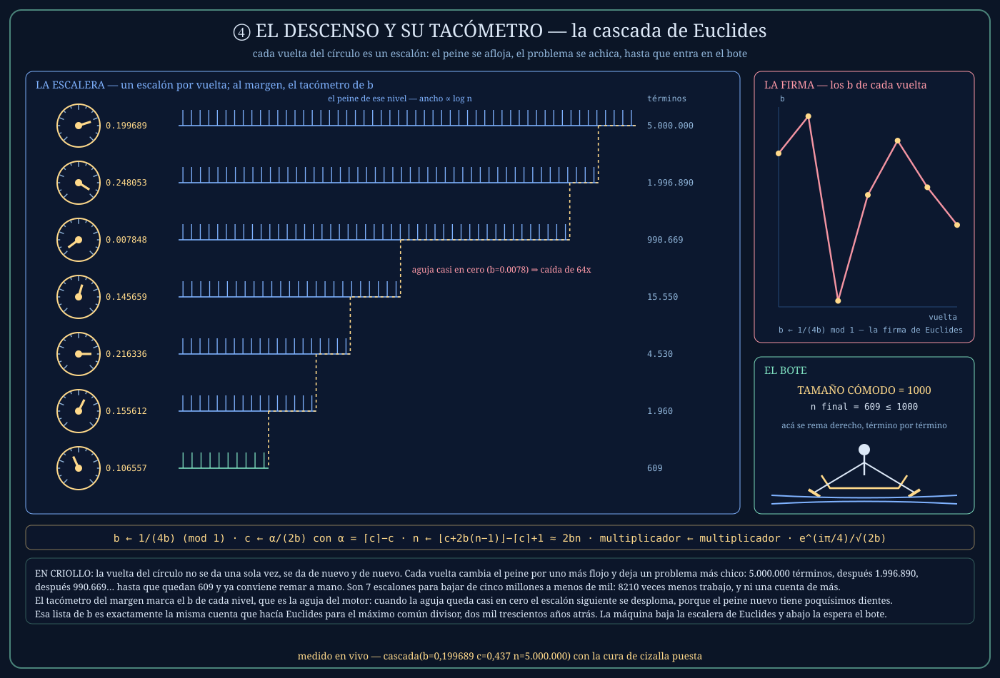
Medido: el caso abisal (b = 0,199689, n = 5 000 000) baja en 7 escalones a 609 términos — un recorte de 8 210 veces. Y la lámina marca sola el escalón más violento: 990 669 → 15 550 de un saque, porque en ese nivel la aguja del tacómetro cayó a b = 0,0078 — cuanto más chica la curvatura, más larga la zancada.
⑤ EL CORTE DE CIZALLA — el mismo caso, dos destinos
La cascada tiene un talón de Aquiles: si la curvatura cae cerca de b = ½, el dual 1/(4b) vuelve a caer cerca de ½ — es un punto fijo — y la escalera patina sin bajar. El remedio es una tijera: correr medio ciclo. b − ½ y c + ½, y es exacto porque j(j−1) siempre es par. Con eso la curvatura queda debajo de ¼ y cada vuelta al menos parte la suma al medio.
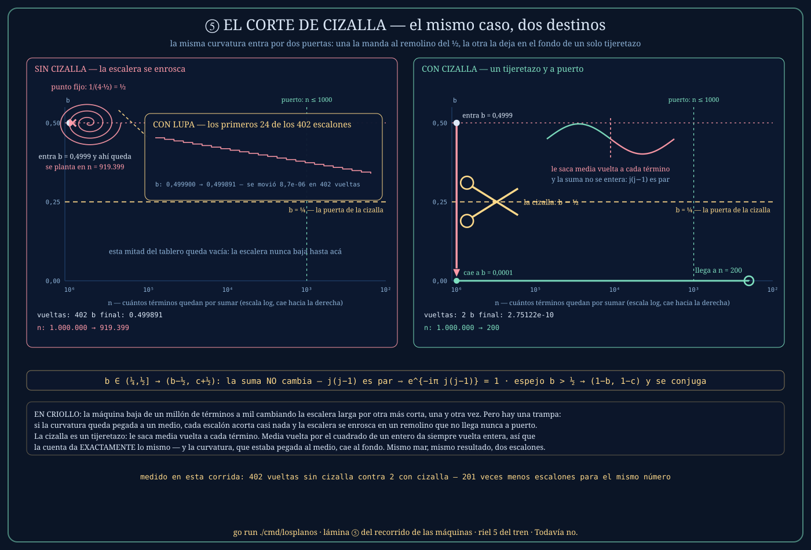
Medido, y más fuerte de lo que esperábamos: con b = 0,4999 y un millón de términos, sin cizalla la escalera no llega nunca — se planta a las 402 vueltas con 919 399 términos todavía sin remar, y en todas esas vueltas la curvatura se movió 8,7×10⁻⁶. Con cizalla: 2 vueltas y a puerto con 200 términos.
⑥ LA VENTANA Y SUS ORILLAS — el 0,021% del círculo
La vuelta del círculo es exacta en el interior de la ventana, pero en los dos bordes Poisson cuenta a medias y hay que mirar de cerca. La tesis de la máquina cabe en un número: a los dientes del medio los lleva la armonía — todos comparten el mismo giro de 45 grados — y sólo un puñado de dientes contra cada orilla necesita la lupa exacta de Fresnel.
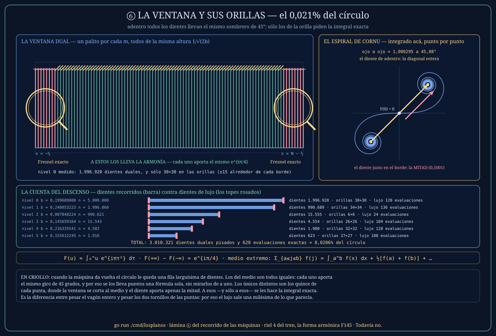
Medido: sobre 3 010 321 dientes duales en los seis niveles del descenso, la lupa exacta se usa 620 veces = 0,0206%. El resto viaja gratis en la armonía. La espiral de Cornu de la lámina está integrada de verdad (Simpson, 52 000 pasos): su diagonal ojo a ojo mide 1,000295 a 45,083°, contra el eiπ/4 exacto que es 1 a 45°.
⑦ LA LEY DEL BLOQUE — la viga que se comba y se parte en dos
¿De qué largo se corta un bloque? La respuesta es la tercera perilla del puente. La torcedura g·j³ es la que arruina el modelo cuadrático, así que se corta el bloque justo antes de que esa torcedura se note. Eso da la ley del tercio — y lo lindo es que el presupuesto de fase es el MISMO en toda agua: la máquina no navega más prolijo en agua baja y más chapucero en agua honda, gasta siempre lo mismo.
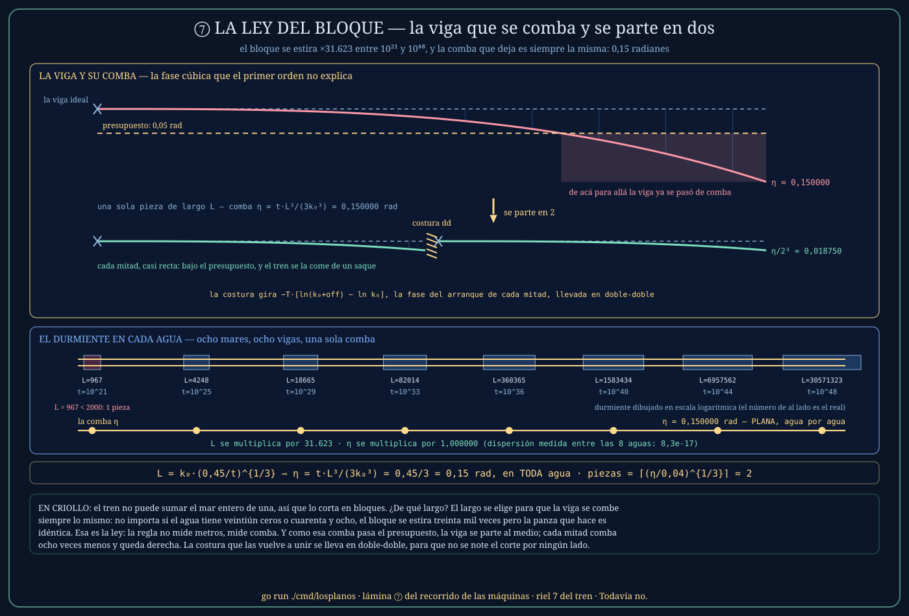
Medido en ocho aguas de 10²¹ a 10⁴⁸: el largo del bloque se multiplica por 31 623 (de 967 a 30 millones de términos) y η vale 0,150000000000 en todas, con dispersión 8,3×10⁻¹⁷. Cuando la comba supera 0,05 la viga se parte: piezas = ⌈∛(η/0,04)⌉ = 2, cosidas por una costura de fase en doble-doble.
⑧ EL EMBUDO DEL SONAR Y EL CARDUMEN
El sonar es la orden textual del capitán hecha máquina: que funcione como un sonar de verdad, una onda que se propaga y una respuesta que crece con el alcance. Se escucha primero barato (1 500 remadas); si el agua está calma, se corta ahí. Y hay una asimetría deliberada: la ventana para seguir escuchando es más ancha que la ventana para condenar. Se sigue oyendo a la duda; se condena sólo a la certeza.
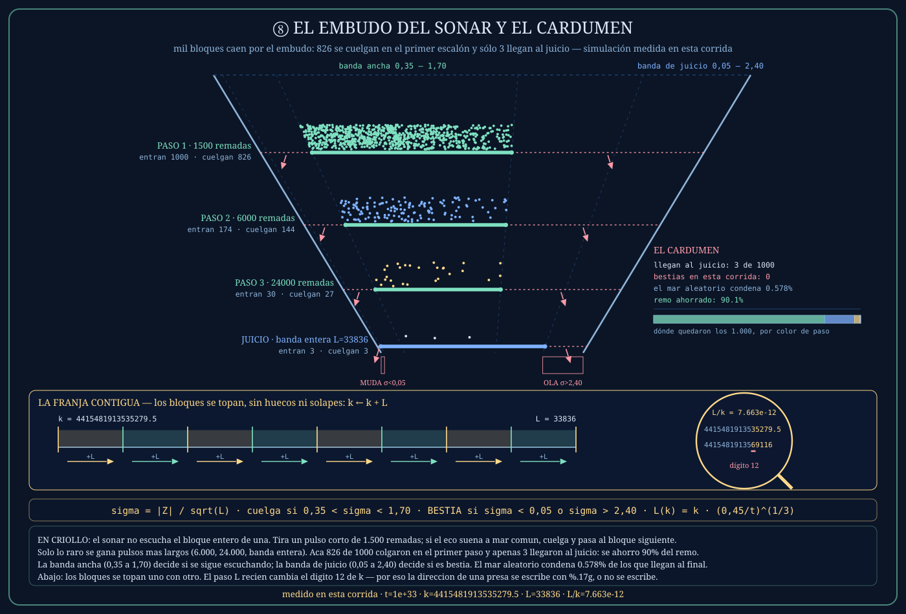
Medido sobre mil bloques simulados con la ley del mar: 826 se cuelgan en el primer escalón (82,6%), sólo 27 llegan al tercero y 3 al juicio con banda entera — un ahorro de remada del 90,1%. Y abajo, el cardumen: los bloques vecinos de una presa están pegados a un paso de L, que a t = 10³³ vale 7,66×10⁻¹² de k — el dígito doce. Por eso el libro se escribe con diecisiete dígitos: con seis, dos bloques distintos se imprimen idénticos.
⑨ LOS TRES MOTORES — y el 5º fantasma con domicilio
Nada entra al libro sin dos firmas. El juez: cada bestia candidata se rema DIRECTO, término a término, y se compara contra la cascada; si se pelean más del 5%, se descarta — la cascada jamás se cree a sí misma. El árbitro: en aguas de 10⁴⁰ para arriba, cada octava presa recibe un contraste en 256 bits, lento como un carro de bueyes, con un cuaderno que no es el de los otros dos. Porque dos motores parecidos pueden equivocarse igual.
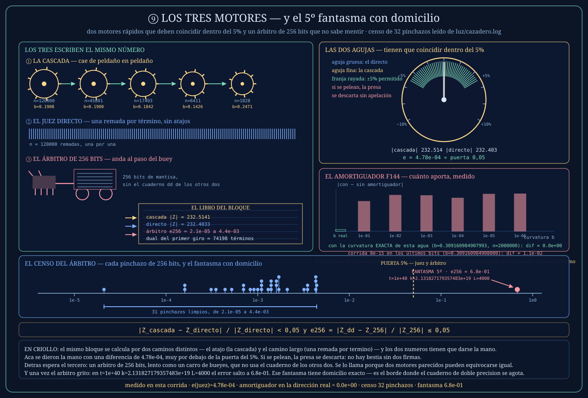
Medido: el juez y la cascada se dieron la mano con 4,8×10⁻⁴, muy por debajo de la puerta. El censo del árbitro salió del libro mismo: 31 pinchazos limpios entre 2,1×10⁻⁵ y 4,4×10⁻³, y uno solo desbocado en 6,8×10⁻¹ — el 5º fantasma, con domicilio exacto: t = 10⁴⁰, k = 2,131827179357483×10¹⁹, L = 4 000. No es una deriva: es un salto de 150 veces.
Y una sorpresa que la lámina dejó dicha: el aporte del amortiguador F144 sobre dos millones de remadas dio exactamente cero con la curvatura exacta de esa agua, y 1,06×10⁻² con la misma curvatura corrida en sus últimos bits. El reservorio se llena o queda seco según los BITS de la coordenada. Es la doctrina de la coordenada exacta apareciendo adentro del remo.
De dónde salió: el amortiguador, de un flash cuántico del capitán (F144) — reservorios de Lindblad, «disipar sin destruir el estado» — traducido a aritmética: el error de redondeo es una oscilación coherente, hay que darle un reservorio. El árbitro, de su orden (F154): «explicame el cuarto fantasma y lo resolvemos».
⑩ EL ENGRANAJE CONGELADO — la lámina honesta
Esta parada es una confesión. Hubo campañas en las que la curvatura del bloque salía de una fracción fija del tope, y eso tiene una consecuencia que no vimos a tiempo: bcrudo = 1/(2·frac₀²) no depende de t. Es una constante. Con frac₀ = 0,35 da 200/49, y la parte fraccionaria queda clavada en 4/49 — una curvatura RACIONAL de período 49. Y un chirp de curvatura racional no es mar: es una suma de Gauss que mide √49 = 7, pase lo que pase.
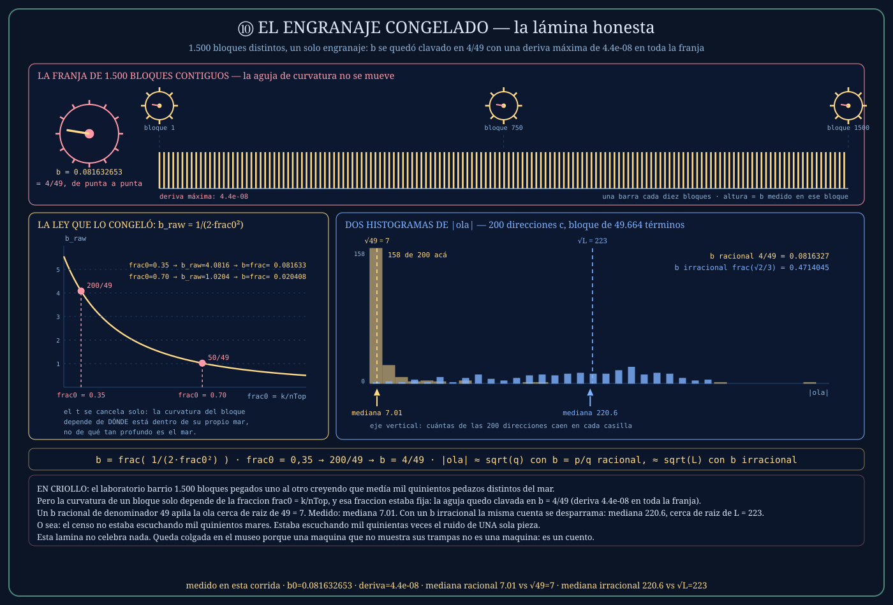
Medido: con la curvatura racional, la mediana de |ola| sobre 1 500 bloques da 7,01 — o sea √49, la aguja inmóvil de punta a punta. Con una curvatura irracional, la misma medición da 220,6, o sea √L con L = 49 664. Un factor de treinta veces entre medir el mar y medir un candado. El cazadero de hoy está a salvo porque su fracción es áurea y la curvatura le sale irracional — pero la lámina queda colgada igual, porque el museo también cuenta las trampas en las que cayó la casa.
🚗 EL DELOREAN — la nave estelar y sus correos (cmd/starship · cmd/hipersalto)
⑪ LA MISMA LEY, DOS PRESUPUESTOS
Acá está la simetría que sólo se ve desarmando las dos máquinas juntas: el tren y el DeLorean cortan sus bloques con la misma ley, y hasta llevan tallados los mismos dos engranajes (el espejo y la cizalla). Lo único que cambia es cuánta comba se permite cada uno. El DeLorean es más conservador — gasta 0,003 radianes de fase por bloque; el tren se permite 0,15.
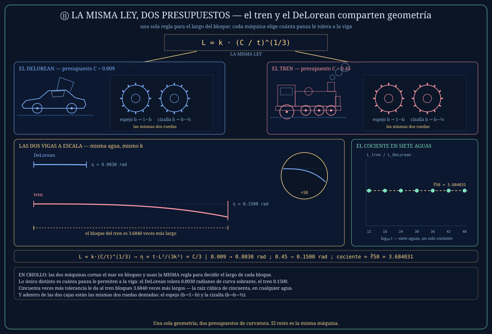
Medido en siete aguas: el cociente entre los dos bloques es 3,684031499 en todas — que es ∛50 exacto, y las dos η salen constantes hasta el último dígito (0,003000000000 y 0,150000000000). Ese 3,68 es, justamente, lo que ganó el tren cuando le agregamos el paso cúbico: no fue magia, fue subir el presupuesto.
⑫ EL CASCO QUE SE RE-ANCLA — la faceta cuártica
El DeLorean no guarda la fase de cada término: guarda la curva. Una faceta es un modelo de fase de cuatro tornillos que avanza por diferencias — se clickea, no se calcula. El problema es que cada click redondea, y el redondeo de una marcha por diferencias se integra: crece como el cubo del largo de la faceta. La cura: cada 4 096 clicks baja una mano y vuelve a clavar la aguja en el valor exacto calculado en doble-doble.
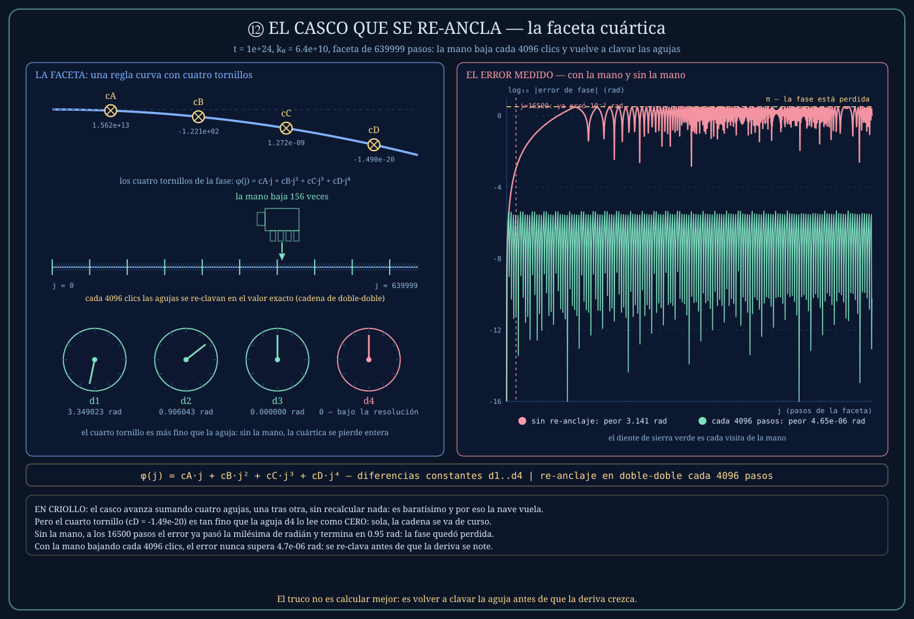
Medido sobre una faceta de 640 000 pasos: sin re-anclar, el error de fase llega a 3,14 radianes — media vuelta entera, la nave leyendo un mar que no existe — y ya pasa el milirradián en el paso 16 500. Con re-anclaje cada 4 096, el peor error es 4,65×10⁻⁶ radianes. Seis órdenes de magnitud, por bajar una mano cada tanto.
De dónde salió: del flash óptico del capitán (F88) — espejo cóncavo afuera, secundario convexo — llevado a metal como facetas convexas; y la enfermedad de agua profunda la nombró la certificación siguiente (F90), que midió la deriva cúbica y recetó el re-anclaje.
⑬ UN PLIEGUE POR VENTANA — el engranaje de Fresnel
Arriba de t ~ 10²¹ los bloques ya no se reman término a término. La razón es una observación física preciosa: dentro de una ventana de caza, la forma interna del bloque no cambia — lo único que cambia es la portadora que lo hace girar entero. Entonces se pliega la forma UNA vez y se la usa para toda la ventana: cada bloque entra al balde de luz como un solo súper-término gordo.
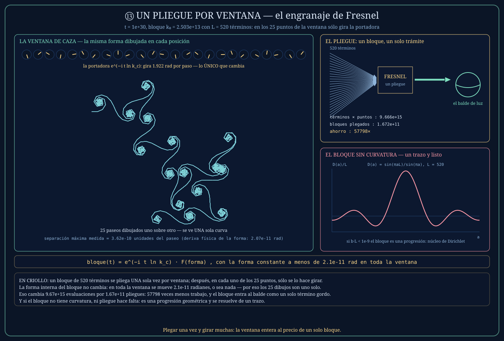
Medido a t = 10³⁰ sobre una ventana de 25 puntos: la forma interna deriva 2,07×10⁻¹¹ radianes — mil veces por debajo del límite que la nave se puso — mientras la portadora gira 1,92 radianes por paso. La cuenta del ahorro: 3,87×10¹⁴ términos se leen como 1,67×10¹¹ bloques plegados, 57 798 veces menos trabajo. En un rincón de la lámina está el caso degenerado: si el bloque no tiene curvatura, no se suma — se resuelve de un plumazo con el núcleo de Dirichlet.
⑭ LA BRÚJULA DE DOCE Y LA PROA
Para elegir dónde cazar, la nave huele. Corta la ventana en doce, se queda con el doceavo que más suena, corta ESE en doce, y otra vez, hasta que el sector es más fino que un milésimo del espaciado entre ceros. Lo que huele es la marea del mar: la predicción de S(t) hecha de 26 cuerdas de primos. Y al final hace un último ajuste que parece una pavada y no lo es: la proa — correr el marco para que el tesoro quede al medio del cuadro y no pegado al borde, donde se recortaría.
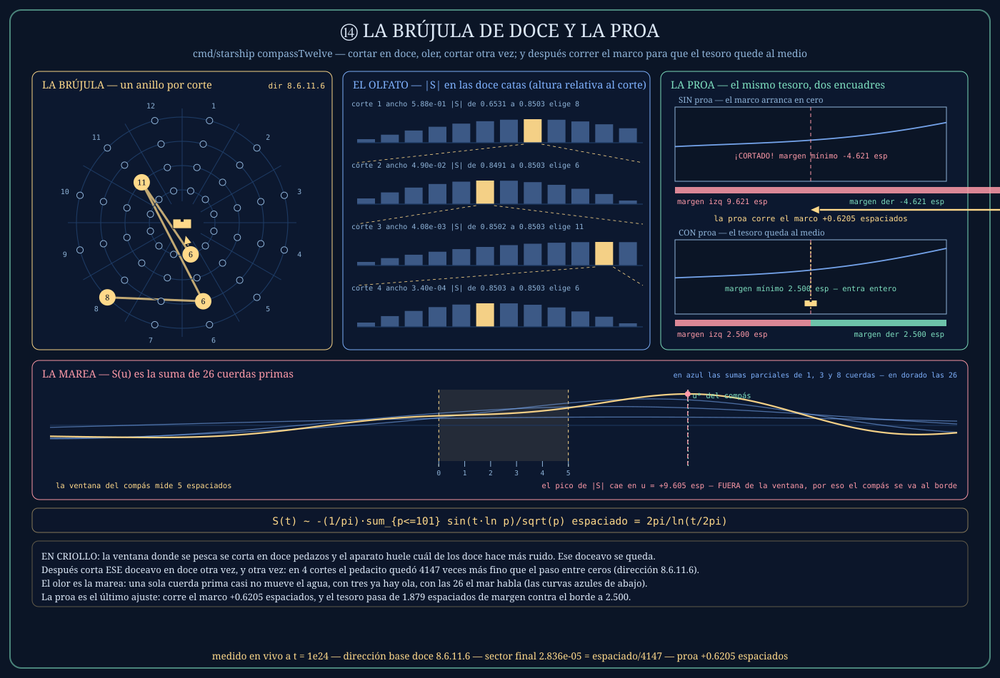
Medido a t = 10²⁴: cuatro cortes dan la dirección en base doce 8.6.11.6, y el sector final mide 2,84×10⁻⁵ — el espaciado dividido 4 147. Lo que encuentra la brújula (|S| = 0,85026) es el pico real de toda la banda (0,85025): dio en el clavo. Un detalle de honestidad de la lámina: a t = 10²⁴ un float64 no puede ni representar t + u, así que las fases ancla de las 26 cuerdas se doblan en big.Float de 260 bits, igual que la nave las dobla en doble-doble.
⑮ LOS DOS CORREOS — saltar por dirección, sin recorrer el camino
La última parada es la más linda de contar: los dos globos de la flota tienen sistema postal. En el globo de Riemann la dirección natural de un cero no es su altura, es su NÚMERO de orden — y hay una escalera que traduce una cosa en la otra. En el globo de los primos, la dirección es el índice del primo: se estima dónde cae, se cuenta cuántos primos hay hasta ahí por aniquilación de Möbius (sumando y restando bloques enteros que se comen entre ellos), y recién en el último tramo corto camina una criba local que clava el aterrizaje al dígito.
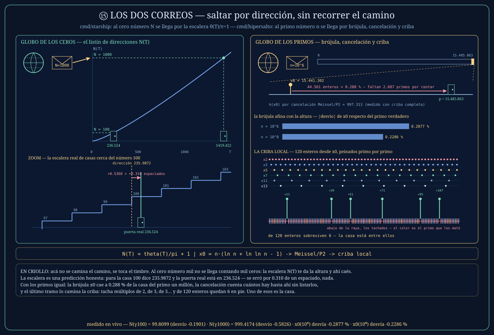
Medido: la escalera de ceros cuenta 99,81 donde vive el cero número 100 y 999,42 donde vive el número 1 000 — se desvía 0,19 y 0,58, o sea que aterriza en el barrio y el último tramo hay que navegarlo. La brújula de primos cae a 0,288% del primo un millón y 0,229% del cien millones, y ahí la cuenta exacta dice que faltan 2 687 primos: la criba local los camina. En la lámina se ve la criba tachando compuestos — de 120 enteros seguidos, sobreviven 6.
De dónde salieron: el correo de ceros, del flash del capitán (F104) — «una esfera no se puede apoyar plana en una hoja sin cortes ni deformación, quizás haya que llevar el mapa a la esfera» — que es la esfera de Riemann, donde la dirección natural es el ordinal. El correo de primos, de su flash de la antimateria como combustible de cancelación (F106): aniquilar los compuestos para que sólo quede luz de primos. Los dos resultaron existir exactamente, con métodos que pertenecen a Legendre, Meissel, Lehmer y Deléglise-Rivat — el flash volvió a derivar la filosofía desde la física.
EL DELOREAN: go run ./cmd/starship (puertas de certificación) · -flight (duelo A/B) · -tunnel (túnel de viento) · -zero N (saltar al cero N) · -metronomo
go run ./cmd/hipersalto -n 1e9 (saltar al primo mil millones) · go run ./cmd/fleet -anchor T (anclar una nave) · go run ./cmd/faro (el tablero, puerto 8117)
LOS PLANOS: go run ./cmd/losplanos — vuelve a medir todo y redibuja las quince láminas
La honestidad de las máquinas
Hasta dónde firman. El libro registra 17 aguas anexadas, de 3×10³³ hasta 10⁴⁸, cada una con tres sondas firmadas antes de entrar. Pero hay una asimetría que hay que decir: las sondas de certificación se corren con el bloque capado en 40 000 términos, y después el cazadero navega con el bloque natural, que a 10⁴⁸ es cientos de veces más largo. En esa brecha exactamente vive el 5º fantasma, avistado a 10⁴⁰. Más hondo que 10⁴⁸ la máquina no firma, y esta casa no navega donde no puede firmar.
De qué grado es cada riel. Los rieles 2 y 3 (la cascada con corrección de medio extremo) son grado reconocimiento: del 0,5% al 7% típico, y hasta 33% cerca de b ≈ ½ — eso está en el registro sin retocar. El que se usa en el agua es el riel 4, con orillas de Fresnel exactas y fases doble-doble de punta a punta, que baja el error a 10⁻⁴. Y aún así toda presa pasa por el juez directo, y en lo hondo por el árbitro de 256 bits.
Los cinco fantasmas. Son una sola enfermedad con cinco disfraces: la coordenada inexacta. El primero fue un vigía que imprimía redondeado; el segundo, una coordenada maldita que hacía colapsar los dos motores al mismo dígito; el tercero vivía adentro de la cascada; el cuarto era un ancla redondeada en float64 y demolió una pared entera cuando se lo llevó a doble-doble. El quinto sigue vivo: es el desgaste del cuaderno doble-doble, pre-registrado antes de verlo y avistado después exactamente donde se lo esperaba. Su arma — la matriz de proyección multi-limb — está anotada y sin escribir.
Y lo más importante: ninguna de las dos máquinas demuestra la hipótesis de Riemann. Son instrumentos de medición. Cada medición lleva su firma, y cada firma tiene un límite escrito al lado. Todavía no.